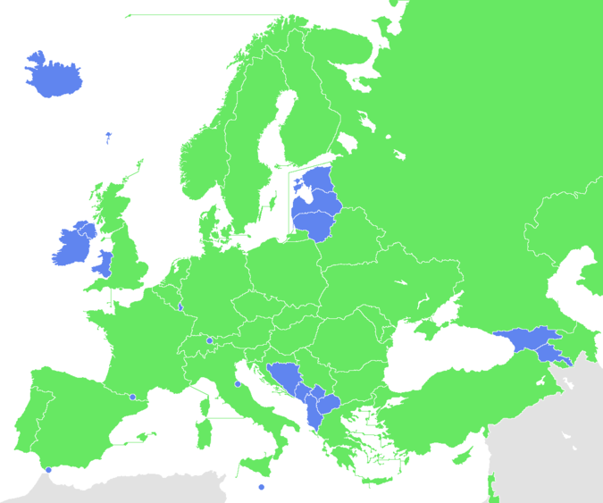

| Home | Champions | Records |
|---|

The UEFA Champions League (abbreviated as UCL, or sometimes, UEFA CL) is an annual club football competition organised by the Union of European Football Associations (UEFA) and contested by top-division European clubs, deciding the competition winners through a round robin group stage to qualify for a double-legged knockout format, and a single leg final.
It is one of the most prestigious football tournaments in the world and the most prestigious club competition in European football, played by the national league champions (and, for some nations, one or more runners-up) of their national associations.
Introduced in 1955 as the Coupe des Clubs Champions Européens (French for European Champion Clubs' Cup), and commonly known as the European Cup, it was initially a straight knockout tournament open only to the champions of Europe's domestic leagues, with its winner reckoned as the European club champion. The competition took on its current name in 1992, adding a round-robin group stage in 1991 and allowing multiple entrants from certain countries since the 1997–98 season.
It has since been expanded, and while most o3f Europe's national leagues can still only enter their champion, the strongest leagues now provide up to four teams.
Clubs that finish next-in-line in their national league, having not qualified for the Champions League, are eligible for the second-tier UEFA Europa League competition, and from 2021, teams not eligible for the UEFA Europa League qualify for the third-tier UEFA Europa Conference League.
 In its present format, the Champions League begins in late June with a preliminary round, three qualifying rounds and a play-off round, all played over two legs.
In its present format, the Champions League begins in late June with a preliminary round, three qualifying rounds and a play-off round, all played over two legs.
The six surviving teams enter the group stage, joining 26 teams qualified in advance.
The 32 teams are drawn into eight groups of four teams and play each other in a double round-robin system.
The eight group winners and eight runners-up proceed to the knockout phase that culminates with the final match in late May or early June.
The winner of the Champions League qualifies for the following year's Champions League, the UEFA Super Cup, and the FIFA Club World Cup.
Spanish clubs have the highest number of victories (19 wins), followed by England (14 wins) and Italy (12 wins). England has the largest number of winning teams, with five clubs having won the title. The competition has been won by 22 clubs, 13 of which have won it more than once, and eight successfully defended their title. Real Madrid is the most successful club in the tournament's history, having won it 14 times, including the first five seasons and also five of the last nine. Only one club has won all of their matches in a single tournament en route to the tournament victory: Bayern Munich in the 2019–20 season. Real Madrid are the current European champions, having beaten Liverpool 1–0 in the 2022 final.
The UEFA Champions League begins with a double round-robin group stage of 32 teams, which since the 2009–10 season is preceded by two qualification 'streams' for teams that do not receive direct entry to the tournament proper. The two streams are divided between teams qualified by virtue of being league champions, and those qualified by virtue of finishing second or third in their national championship.
The number of teams that each association enters into the UEFA Champions League is based upon the UEFA coefficients of the member associations. These coefficients are generated by the results of clubs representing each association during the previous five Champions League and UEFA Cup/Europa League seasons. The higher an association's coefficient, the more teams represent the association in the Champions League, and the fewer qualification rounds the association's teams must compete in.
Four of the remaining six qualifying places are granted to the winners of a six-round qualifying tournament between the remaining 43 or 44 national champions, within which those champions from associations with higher coefficients receive byes to later rounds. The other two are granted to the winners of a three-round qualifying tournament between 10–11 clubs from the associations ranked 5–6 through 15, which have qualified based upon finishing second or third in their respective national league.
In addition to sporting criteria, any club must be licensed by its national association to participate in the Champions League. To obtain a license, the club must meet certain stadium, infrastructure and finance requirements.
In 2005–06, Liverpool and Artmedia Bratislava became the first teams to reach the Champions League group stage after playing in all three qualifying rounds. Real Madrid and Barcelona hold the record for the most appearances in the group stage, having qualified 25 times, followed by Porto and Bayern on 24.
Between 1999 and 2008, no differentiation was made between champions and non-champions in qualification. The 16 top-ranked teams spread across the biggest domestic leagues qualified directly for the tournament group stage. Prior to this, three preliminary knockout qualifying rounds whittled down the remaining teams, with teams starting in different rounds.

An exception to the usual European qualification system happened in 2005, after Liverpool won the Champions League the year before, but did not finish in a Champions League qualification place in the Premier League that season. UEFA gave special dispensation for Liverpool to enter the Champions League, giving England five qualifiers. UEFA subsequently ruled that the defending champions qualify for the competition the following year regardless of their domestic league placing.
However, for those leagues with four entrants in the Champions League, this meant that, if the Champions League winner fell outside of its domestic league's top four, it would qualify at the expense of the fourth-placed team in the league. Until 2015–16, no association could have more than four entrants in the Champions League. In May 2012, Tottenham Hotspur finished fourth in the 2011–12 Premier League, two places ahead of Chelsea, but failed to qualify for the 2012–13 Champions League, after Chelsea won the 2012 final. Tottenham were demoted to the 2012–13 UEFA Europa League.
In May 2013, it was decided that, starting from the 2015–16 season (and continuing at least for the three-year cycle until the 2017–18 season), the winners of the previous season's UEFA Europa League would qualify for the UEFA Champions League, entering at least the play-off round, and entering the group stage if the berth reserved for the Champions League title holders was not used. The previous limit of a maximum of four teams per association was increased to five, meaning that a fourth-placed team from one of the top three ranked associations would only have to be moved to the Europa League if both the Champions League and Europa League winners came from that association and both finished outside the top four of their domestic league.
In 2007, Michel Platini, the UEFA president, had proposed taking one place from the three leagues with four entrants and allocating it to that nation's cup winners. This proposal was rejected in a vote at a UEFA Strategy Council meeting. In the same meeting, however, it was agreed that the third-placed team in the top three leagues would receive automatic qualification for the group stage, rather than entry into the third qualifying round, while the fourth-placed team would enter the play-off round for non-champions, guaranteeing an opponent from one of the top 15 leagues in Europe. This was part of Platini's plan to increase the number of teams qualifying directly into the group stage, while simultaneously increasing the number of teams from lower-ranked nations in the group stage.
In 2012, Arsène Wenger referred to qualifying for the Champions League by finishing in the top four places in the English Premier League as the "4th Place Trophy". The phrase was coined after a pre-match conference when he was questioned about Arsenal's lack of a trophy after exiting the FA Cup. He said "The first trophy is to finish in the top four". At Arsenal's 2012 AGM, Wenger was also quoted as saying: "For me there are five trophies every season: Premier League, Champions League, the third is to qualify for the Champions League..."
The tournament proper begins with a group stage of 32 teams, divided into eight groups of four.Seeding is used whilst making the draw for this stage, whilst teams from the same nation may not be drawn into groups together. Each team plays six group stage games, meeting the other three teams in its group home and away in a round-robin format. The winning team and the runners-up from each group then progress to the next round. The third-placed team enters the UEFA Europa League.
This means that, at best, a club can earn €85,140,000 of prize money under this structure, not counting shares of the qualifying rounds, play-off round or the market pool.
A large part of the distributed revenue from the UEFA Champions League is linked to the "market pool", the distribution of which is determined by the value of the television market in each nation. For the 2014–15 season, Juventus, who were the runners-up, earned nearly €89.1 million in total, of which €30.9 million was prize money, compared with the €61.0 million earned by Barcelona, who won the tournament and were awarded €36.4 million in prize money.